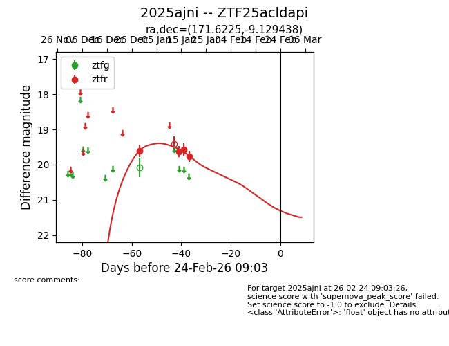
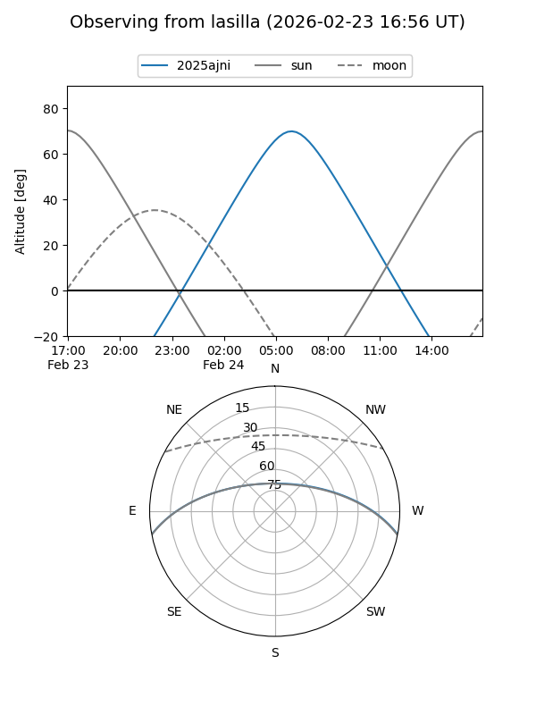
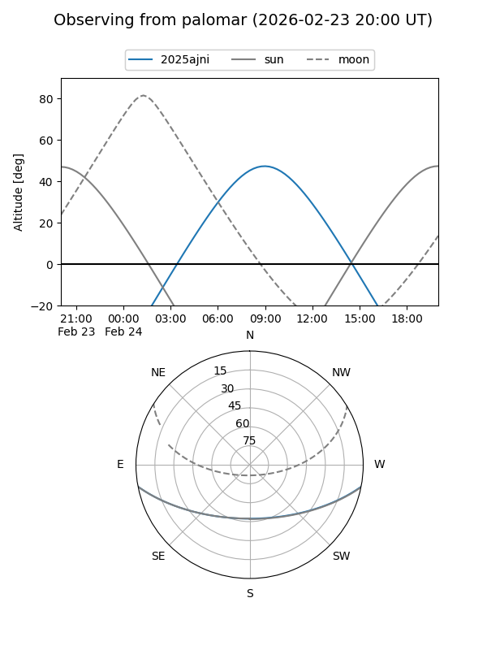
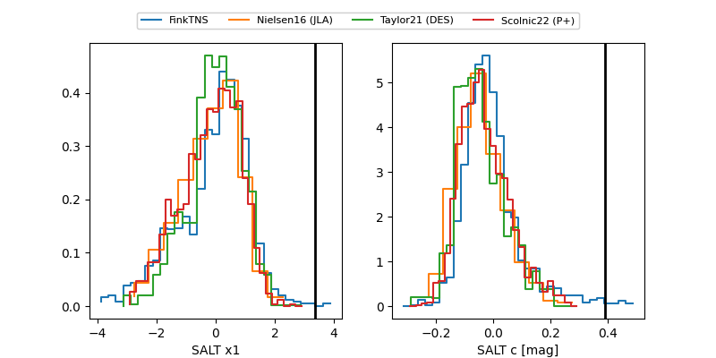

2025ajni
Target 2025ajni at 2026-01-20 11:11
Aliases and brokers:
FINK: link
Lasair: link
ALeRCE: link
TNS: link
YSE: link
alt names
ZTF25acldapi (ztf,fink_ztf)
2025ajni (tns,yse)
Coordinates:
equatorial (ra, dec) = 171.6225,-9.12944
equatorial (HMS+DMS) = 11:26:29.39,-09:07:45.98
galactic (l, b) = (270.4072,+48.30462)
Flags:
Photometry:
last ztfr=19.76
4 ztfr detections
Lightcurve

Visibility


Additional plots
